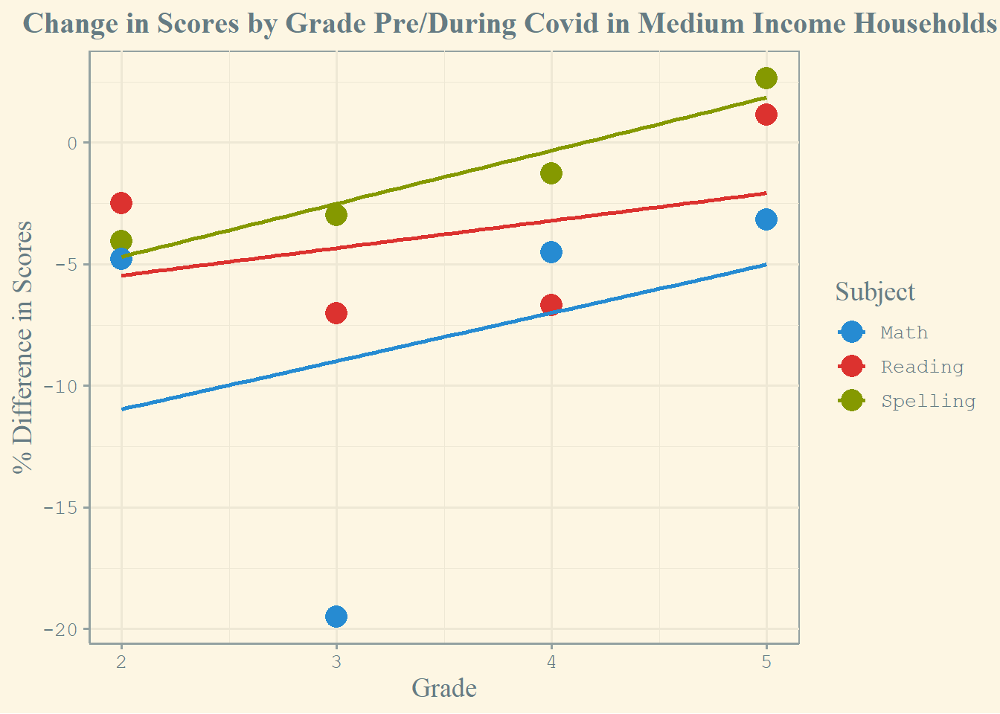
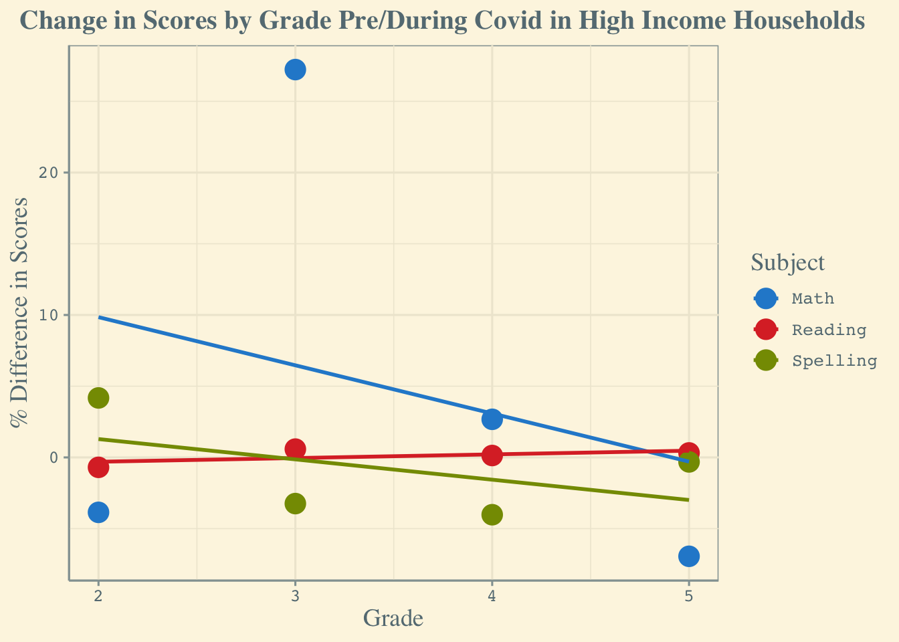
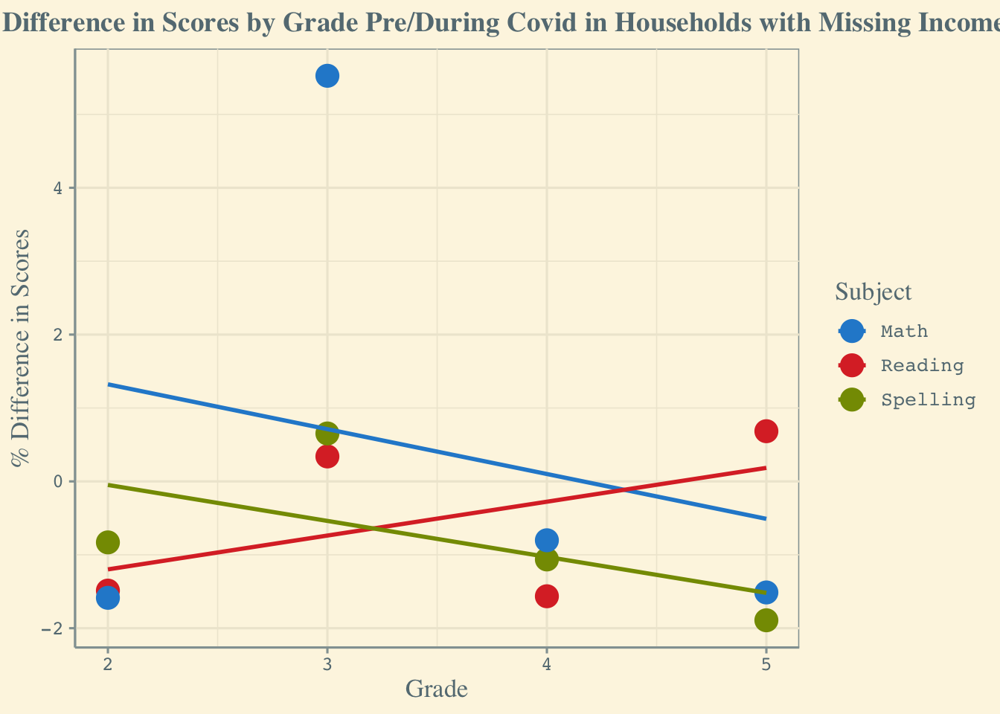

── Attaching core tidyverse packages ──────────────────────── tidyverse 2.0.0 ──
✔ dplyr 1.1.4 ✔ readr 2.1.5
✔ forcats 1.0.0 ✔ stringr 1.5.1
✔ ggplot2 3.5.1 ✔ tibble 3.2.1
✔ lubridate 1.9.3 ✔ tidyr 1.3.1
✔ purrr 1.0.2
── Conflicts ────────────────────────────────────────── tidyverse_conflicts() ──
✖ dplyr::filter() masks stats::filter()
✖ dplyr::lag() masks stats::lag()
ℹ Use the conflicted package (<http://conflicted.r-lib.org/>) to force all conflicts to become errors7 gabriel-dh
7.1 Import Necessary Libraries
7.2 Reshape, Clean, and wrangle the data
New names:
Rows: 20 Columns: 15
── Column specification
──────────────────────────────────────────────────────── Delimiter: "," chr
(15): VARIABLES, Grade 2...2, Grade 3...3, Grade 4...4, Grade 5...5, Gra...
ℹ Use `spec()` to retrieve the full column specification for this data. ℹ
Specify the column types or set `show_col_types = FALSE` to quiet this message.
• `Grade 2` -> `Grade 2...2`
• `Grade 3` -> `Grade 3...3`
• `Grade 4` -> `Grade 4...4`
• `Grade 5` -> `Grade 5...5`
• `Grade 1` -> `Grade 1...6`
• `Grade 2` -> `Grade 2...7`
• `Grade 3` -> `Grade 3...8`
• `Grade 4` -> `Grade 4...9`
• `Grade 5` -> `Grade 5...10`
• `Grade 1` -> `Grade 1...11`
• `Grade 2` -> `Grade 2...12`
• `Grade 3` -> `Grade 3...13`
• `Grade 4` -> `Grade 4...14`
• `Grade 5` -> `Grade 5...15`clean_covid_formatted <- messy_covid |>
filter(VARIABLES != "Additional controls") |>
filter(VARIABLES != "Household income") |>
filter(VARIABLES != "Parental education") |>
rename(reading_2 = `Grade 2...2`,
reading_3 = `Grade 3...3`,
reading_4 = `Grade 4...4`,
reading_5 = `Grade 5...5`,
spelling_1 = `Grade 1...6`,
spelling_2 = `Grade 2...7`,
spelling_3 = `Grade 3...8`,
spelling_4 = `Grade 4...9`,
spelling_5 = `Grade 5...10`,
math_1 = `Grade 1...11`,
math_2 = `Grade 2...12`,
math_3 = `Grade 3...13`,
math_4 = `Grade 4...14`,
math_5 = `Grade 5...15`) |>
select(-math_1, -spelling_1) |>
mutate(VARIABLES = ifelse(reading_2 == "-0.0233", "income_medium", VARIABLES)) |>
mutate(VARIABLES = ifelse(reading_2 == "0.0181", "income_high", VARIABLES)) |>
mutate(VARIABLES = ifelse(reading_2 == "0.0498", "income_missing", VARIABLES)) |>
mutate(VARIABLES = ifelse(reading_2 == "0.00413", "education_medium", VARIABLES)) |>
mutate(VARIABLES = ifelse(reading_2 == "0.0235", "education_high", VARIABLES)) |>
mutate(VARIABLES = ifelse(reading_2 == "-0.0303", "education_missing", VARIABLES))
write.csv(clean_covid_formatted, "../../data/clean_covid_formatted.csv")
clean_covid_formatted# A tibble: 17 × 13
VARIABLES reading_2 reading_3 reading_4 reading_5 spelling_2 spelling_3
<chr> <chr> <chr> <chr> <chr> <chr> <chr>
1 COVID-19 year … -0.0931 -0.18 -0.137 -0.205 -0.211 -0.194
2 income_medium -0.0233 -0.0105 -0.00709 0.0186 -0.0156 -0.0212
3 income_high 0.0181 0.0326 0.0291 0.0327 0.0176 -0.0323
4 income_missing 0.0498 0.0456 0.111 0.117 0.207 0.0962
5 COVID-19 year … 0.0352 0.0632 0.0403 0.0397 0.0478 0.0419
6 COVID-19 year … 0.00549 0.0516 0.033 0.043 0.0911 0.0724
7 COVID-19 year … -0.0243 0.0611 -0.0627 0.197 0.035 0.159
8 education_medi… 0.00413 0.0461 0.0362 0.0209 -0.018 0.0156
9 education_high 0.0235 0.118 0.11 0.0467 0.0315 0.0329
10 education_miss… -0.0303 0.0483 0.0301 0.0459 0.0127 0.045
11 COVID-19 year … -0.0321 -0.053 -0.056 -0.0416 0.044 -0.0248
12 COVID-19 year … 0.0148 -0.0253 0.0025 -0.0153 0.066 0.0421
13 COVID-19 year … 0.0536 -0.0418 -0.0015 -0.066 0.00363 0.0141
14 Constant 0.0398 0.0108 -0.0539 0.0244 0.00969 0.004
15 Observations 55,303 68,721 68,802 49,491 67,295 72,125
16 R-squared 0.002 0.011 0.005 0.01 0.01 0.007
17 Clusters 1038 1154 1149 1089 1161 1158
# ℹ 6 more variables: spelling_4 <chr>, spelling_5 <chr>, math_2 <chr>,
# math_3 <chr>, math_4 <chr>, math_5 <chr>write.csv(clean_covid_formatted |>
pivot_longer(cols = c(-VARIABLES), names_to = "type_grade", values_to = "score") |>
pivot_wider(names_from = VARIABLES, values_from = score) |>
rename(rsquared = `R-squared`) |>
select(-Constant, -Observations, -Clusters, -rsquared) |>
mutate(subject = as.factor(str_extract(type_grade, "reading|spelling|math")),
grade = as.numeric(str_extract(type_grade, "1|2|3|4|5"))) |>
select(-type_grade), "../../data/clean_covid_formatted.csv")
messy_pre_covid <- read_csv("../../data/clean_covid_formatted.csv")New names:
Rows: 12 Columns: 16
── Column specification
──────────────────────────────────────────────────────── Delimiter: "," chr
(1): subject dbl (15): ...1, COVID-19 year (2019/2020), income_medium,
income_high, incom...
ℹ Use `spec()` to retrieve the full column specification for this data. ℹ
Specify the column types or set `show_col_types = FALSE` to quiet this message.
• `` -> `...1`pre_covid <- messy_pre_covid |>
select(-`...1`) |>
mutate(income_medium_dif = `COVID-19 year * Medium income household` - income_medium) |>
mutate(income_high_dif = `COVID-19 year * High income household` - income_high) |>
mutate(income_missing_dif = `COVID-19 year * Household income missing` - income_missing) |>
mutate(pct_dif_medium = (income_medium_dif / income_medium)) |>
mutate(pct_dif_high = (income_high_dif / income_high)) |>
mutate(pct_dif_missing = (income_missing_dif / income_missing)) |>
mutate(subject = fct_recode(subject,
"Math" = "math",
"Spelling" = "spelling",
"Reading" = "reading"))
write.csv(pre_covid, "../../data/pre_covid.csv")
pre_covid# A tibble: 12 × 21
`COVID-19 year (2019/2020)` income_medium income_high income_missing
<dbl> <dbl> <dbl> <dbl>
1 -0.0931 -0.0233 0.0181 0.0498
2 -0.18 -0.0105 0.0326 0.0456
3 -0.137 -0.00709 0.0291 0.111
4 -0.205 0.0186 0.0327 0.117
5 -0.211 -0.0156 0.0176 0.207
6 -0.194 -0.0212 -0.0323 0.0962
7 -0.146 -0.0161 -0.0214 0.284
8 -0.181 0.0046 0.0145 0.213
9 -0.285 -0.0247 -0.0427 0.0372
10 -0.313 -0.00393 0.00333 0.0135
11 -0.383 -0.0162 0.012 0.0834
12 -0.378 -0.0144 -0.00313 0.0846
# ℹ 17 more variables: `COVID-19 year * Medium income household` <dbl>,
# `COVID-19 year * High income household` <dbl>,
# `COVID-19 year * Household income missing` <dbl>, education_medium <dbl>,
# education_high <dbl>, education_missing <dbl>,
# `COVID-19 year * Parental education medium` <dbl>,
# `COVID-19 year * Parental education high` <dbl>,
# `COVID-19 year * Parental education missing` <dbl>, subject <fct>, …7.3 Understand The Structure of The Data
tibble [12 × 21] (S3: tbl_df/tbl/data.frame)
$ COVID-19 year (2019/2020) : num [1:12] -0.0931 -0.18 -0.137 -0.205 -0.211 -0.194 -0.146 -0.181 -0.285 -0.313 ...
$ income_medium : num [1:12] -0.0233 -0.0105 -0.00709 0.0186 -0.0156 -0.0212 -0.0161 0.0046 -0.0247 -0.00393 ...
$ income_high : num [1:12] 0.0181 0.0326 0.0291 0.0327 0.0176 -0.0323 -0.0214 0.0145 -0.0427 0.00333 ...
$ income_missing : num [1:12] 0.0498 0.0456 0.111 0.117 0.207 0.0962 0.284 0.213 0.0372 0.0135 ...
$ COVID-19 year * Medium income household : num [1:12] 0.0352 0.0632 0.0403 0.0397 0.0478 0.0419 0.00458 0.0168 0.0934 0.0727 ...
$ COVID-19 year * High income household : num [1:12] 0.00549 0.0516 0.033 0.043 0.0911 0.0724 0.0647 0.00992 0.122 0.094 ...
$ COVID-19 year * Household income missing : num [1:12] -0.0243 0.0611 -0.0627 0.197 0.035 0.159 -0.018 -0.19 -0.0218 0.0881 ...
$ education_medium : num [1:12] 0.00413 0.0461 0.0362 0.0209 -0.018 0.0156 -0.016 0.0832 -0.0106 -0.0249 ...
$ education_high : num [1:12] 0.0235 0.118 0.11 0.0467 0.0315 0.0329 -0.0142 0.127 -0.00397 -0.00166 ...
$ education_missing : num [1:12] -0.0303 0.0483 0.0301 0.0459 0.0127 0.045 -0.0115 0.068 -0.018 -0.0241 ...
$ COVID-19 year * Parental education medium : num [1:12] -0.0321 -0.053 -0.056 -0.0416 0.044 -0.0248 0.0286 -0.0484 0.0428 0.0626 ...
$ COVID-19 year * Parental education high : num [1:12] 0.0148 -0.0253 0.0025 -0.0153 0.066 0.0421 0.0548 -0.000224 0.117 0.106 ...
$ COVID-19 year * Parental education missing: num [1:12] 0.0536 -0.0418 -0.0015 -0.066 0.00363 0.0141 0.0256 0.019 0.118 0.133 ...
$ subject : Factor w/ 3 levels "Math","Reading",..: 2 2 2 2 3 3 3 3 1 1 ...
$ grade : num [1:12] 2 3 4 5 2 3 4 5 2 3 ...
$ income_medium_dif : num [1:12] 0.0585 0.0737 0.0474 0.0211 0.0634 ...
$ income_high_dif : num [1:12] -0.0126 0.019 0.0039 0.0103 0.0735 ...
$ income_missing_dif : num [1:12] -0.0741 0.0155 -0.1737 0.08 -0.172 ...
$ pct_dif_medium : num [1:12] -2.51 -7.02 -6.68 1.13 -4.06 ...
$ pct_dif_high : num [1:12] -0.697 0.583 0.134 0.315 4.176 ...
$ pct_dif_missing : num [1:12] -1.488 0.34 -1.565 0.684 -0.831 ... COVID-19 year (2019/2020) income_medium income_high
Min. :-0.3830 Min. :-0.02470 Min. :-0.042700
1st Qu.:-0.2920 1st Qu.:-0.01745 1st Qu.:-0.007698
Median :-0.1995 Median :-0.01500 Median : 0.013250
Mean :-0.2255 Mean :-0.01082 Mean : 0.005033
3rd Qu.:-0.1715 3rd Qu.:-0.00630 3rd Qu.: 0.020850
Max. :-0.0931 Max. : 0.01860 Max. : 0.032700
income_missing COVID-19 year * Medium income household
Min. :0.01350 Min. :0.00458
1st Qu.:0.04875 1st Qu.:0.03420
Median :0.09040 Median :0.04110
Mean :0.11186 Mean :0.04532
3rd Qu.:0.13950 3rd Qu.:0.05855
Max. :0.28400 Max. :0.09340
COVID-19 year * High income household COVID-19 year * Household income missing
Min. :0.00549 Min. :-0.19000
1st Qu.:0.02940 1st Qu.:-0.02908
Median :0.04785 Median :-0.00075
Mean :0.05416 Mean : 0.01638
3rd Qu.:0.07708 3rd Qu.: 0.06785
Max. :0.12200 Max. : 0.19700
education_medium education_high education_missing
Min. :-0.02490 Min. :-0.01420 Min. :-0.03030
1st Qu.:-0.01195 1st Qu.: 0.00416 1st Qu.:-0.01312
Median : 0.00695 Median : 0.02750 Median : 0.01750
Mean : 0.01237 Mean : 0.04093 Mean : 0.01676
3rd Qu.: 0.02473 3rd Qu.: 0.06252 3rd Qu.: 0.04523
Max. : 0.08320 Max. : 0.12700 Max. : 0.06800
COVID-19 year * Parental education medium
Min. :-0.056000
1st Qu.:-0.043300
Median :-0.004300
Mean :-0.002317
3rd Qu.: 0.036125
Max. : 0.062600
COVID-19 year * Parental education high
Min. :-0.025300
1st Qu.: 0.001819
Median : 0.044550
Mean : 0.045198
3rd Qu.: 0.076000
Max. : 0.133000
COVID-19 year * Parental education missing subject grade
Min. :-0.066000 Math :4 Min. :2.00
1st Qu.: 0.002348 Reading :4 1st Qu.:2.75
Median : 0.022300 Spelling:4 Median :3.50
Mean : 0.029794 Mean :3.50
3rd Qu.: 0.050975 3rd Qu.:4.25
Max. : 0.133000 Max. :5.00
income_medium_dif income_high_dif income_missing_dif pct_dif_medium
Min. :0.01220 Min. :-0.01261 Min. :-0.40300 Min. :-19.499
1st Qu.:0.03948 1st Qu.: 0.00870 1st Qu.:-0.17242 1st Qu.: -5.257
Median :0.06080 Median : 0.02692 Median :-0.07050 Median : -3.615
Mean :0.05613 Mean : 0.04913 Mean :-0.09548 Mean : -4.393
3rd Qu.:0.07333 3rd Qu.: 0.08724 3rd Qu.: 0.02732 3rd Qu.: -2.204
Max. :0.11810 Max. : 0.16470 Max. : 0.08000 Max. : 2.652
pct_dif_high pct_dif_missing
Min. :-6.94249 Min. :-1.8920
1st Qu.:-3.39540 1st Qu.:-1.5260
Median :-0.09092 Median :-0.9471
Mean : 1.33618 Mean :-0.2948
3rd Qu.: 1.10587 3rd Qu.: 0.4181
Max. :27.22823 Max. : 5.5259 7.4 Visualize
# viz 1
ggplot(pre_covid, aes(x = grade, y = pct_dif_medium, color = subject)) +
geom_point(size = 5) +
geom_smooth(method = "lm",
se = FALSE) +
labs(x = "Grade", y = "% Difference in Scores", title = "Change in Scores by Grade Pre/During Covid in Medium Income Households") +
theme_solarized() +
scale_color_solarized(name = "Subject") +
theme(plot.title = element_text(hjust = 0.25, family = "serif", size = 15, face = "bold"),
axis.title = element_text(size = 14, family = "serif"),
axis.text = element_text(family = "mono", size = 10, color = "#657b83"),
strip.text = element_text(family = "mono", size = 10),
legend.title = element_text(size = 14, family = "serif", color = "#657b83"),
legend.text = element_text(size = 10, family = "mono", color = "#657b83")) `geom_smooth()` using formula = 'y ~ x'
# viz 2
ggplot(pre_covid, aes(x = grade, y = pct_dif_high, color = subject)) +
geom_point(size = 5) +
geom_smooth(method = "lm",
se = FALSE) +
labs(x = "Grade", y = "% Difference in Scores", title = "Change in Scores by Grade Pre/During Covid in High Income Households") +
theme_solarized() +
scale_color_solarized(name = "Subject") +
theme(plot.title = element_text(hjust = 0.25, family = "serif", size = 15, face = "bold"),
axis.title = element_text(size = 14, family = "serif"),
axis.text = element_text(family = "mono", size = 10, color = "#657b83"),
strip.text = element_text(family = "mono", size = 10),
legend.title = element_text(size = 14, family = "serif", color = "#657b83"),
legend.text = element_text(size = 10, family = "mono", color = "#657b83")) `geom_smooth()` using formula = 'y ~ x'
# viz 3
ggplot(pre_covid, aes(x = grade, y = pct_dif_missing, color = subject)) +
geom_point(size = 5) +
geom_smooth(method = "lm",
se = FALSE) +
labs(x = "Grade", y = "% Difference in Scores", title = "Difference in Scores by Grade Pre/During Covid in Households with Missing Incomes") +
theme_solarized() +
scale_color_solarized(name = "Subject") +
theme(plot.title = element_text(hjust = 0.25, family = "serif", size = 14, face = "bold"),
axis.title = element_text(size = 13, family = "serif"),
axis.text = element_text(family = "mono", size = 10, color = "#657b83"),
strip.text = element_text(family = "mono", size = 10),
legend.title = element_text(size = 13, family = "serif", color = "#657b83"),
legend.text = element_text(size = 10, family = "mono", color = "#657b83")) `geom_smooth()` using formula = 'y ~ x'